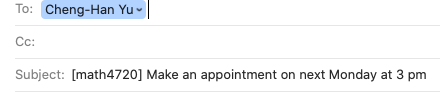
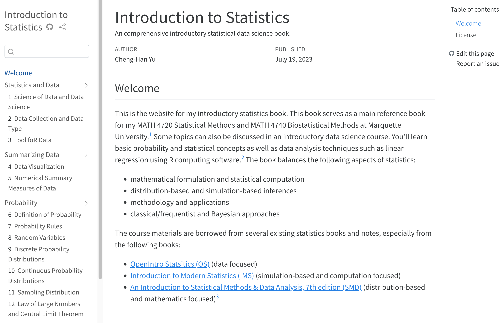

[1] 2Welcome Aboard üôå
MATH 4720/MSSC 5720 Introduction to Statistics
Code
When you click the Render button a presentation will be generated that includes both content and the output of embedded code. You can embed code like this:
Taipei, Taiwan

My Journey
- Assistant Professor (2020/08 - )
- Postdoctoral Fellow

- PhD in Statistics

- MA in Economics/PhD program in Statistics

How to Reach Me
- Office hours TuTh 4:50 - 5:50 PM and Wed 12 - 1 PM in Cudahy Hall 353.
- üìß cheng-han.yu@marquette.edu
- Answer your question within 24 hours.
- Expect a reply on Monday if shoot me a message on weekends.
- Start your subject line with [math4720] or [mssc5720] followed by a clear description of your question.

- I will NOT reply your e-mail if … Check the email policy in the syllabus!
TA Information
Statistics PhD student Qishi Zhan
Help desk hours: To be announced.
Welcome to set up a meeting with your TA via Teams.
Let me know if you need any other help! üòÑ
Course Materials
- Course Website - https://math4720-f25.github.io/website/
Textbook (Dr. Yu’s Online Book)
Introduction to Statistics, by Cheng-Han Yu
Full detailed explanation of course slides üòé

Learning Management System (D2L)

- Assessments > Grades
Grading Policy ✨
- Your final grade is earned out of 1000 total points distributed as follows:
- Homework 1 to 8: 200 pts (25 pts each)
- Quiz 1 to 4: 240 pts (60 pts each)
- Exam 1 and 2: 320 pts (160 pts each)
- Final exam: 240 pts
- Class participation for extra points!
- ❌ No extra credit projects/homework/exam to compensate for a poor grade.
- Individual grade will NOT be curved.
- This is not a course that gives most of students grade A. Wanna get a good grade? Study hard. No pain, no gain! ✍ ✍
Grade-Percentage Conversion ✨
- Your final grade is based on your percentage of points earned out of 1000 points.
- \([x, y)\) means greater than or equal to \(x\) and less than \(y\).
| Grade | Percentage |
|---|---|
| A | [94, 100] |
| A- | [90, 94) |
| B+ | [87, 90) |
| B | [83, 87) |
| B- | [80, 83) |
| C+ | [77, 80) |
| C | [73, 77) |
| C- | [70, 73) |
| D+ | [65, 70) |
| D | [60, 65) |
| F | [0, 60) |
Homework (200 pts)
- Assessments > Dropbox and upload your homework in PDF format.
- There are 8 homework sets.
- You must submit YOUR OWN work. üôè
- ❌ No make-up homework.
- Every homework is due by Friday 11:59 PM (Don’t miss it. This is a hard deadline❗).
- The lowest score of the homework sets will not be in your final grade calculation.
Quizzes (240 pts)
- There are 4 in-class quizzes.
- üìö Quizzes are individual and in closed-book format.
- ❌ No cheat sheet is allowed.
- ❌ No make-up quizzes for any reason unless you got COVID or excused absence. Check the syllabus for more details.
Exams (560 pts)
- There are two midterm exams and one final exam.
- Have in-class and take-home parts.
- üìÑ One piece of letter size cheat sheet is allowed. It has to be turned-in with your in-class exam.
- Assessments > Dropbox to submit your take-home exams in PDF format.
- Exam 1 covers Week 1 to 6
- Exam 2 covers Week 7 to 11
- Final exam is comprehensive and covers the all course materials. üòé
- ❌ No make-up exams unless you got COVID or excused absence. Check the syllabus for more details.
What Computing Language We Use (I Teach)?
- üìà The best language for statistical computing!
- ✅ You may use other tools or software such as Excel, Python, Minitab, etc to do your work, but I will NOT teach any of them.
- ❌ Drop/Swap deadline: 09/05/2022. Don’t miss it!

Generative AI and Sharing/Reusing Code Policy
Generative AI
- You may use generative AI tools such as ChatGPT or DALL-E to generate a first draft of text for your work, provided that this use is documented and cited.
[Example] Data science is an interdisciplinary field that … 1

. . .
Academic Integrity
This course expects all students to follow University and College statements on academic integrity.
- Honor Pledge and Honor Code: I recognize the importance of personal integrity in all aspects of life and work. I commit myself to truthfulness, honor, and responsibility, by which I earn the respect of others. I support the development of good character, and commit myself to uphold the highest standards of academic integrity as an important aspect of personal integrity. My commitment obliges me to conduct myself according to the Marquette University Honor Code.
Footnotes
ChatGPT, response to “Tell me what data science is,” Jan 14, 2025, https://chat.openai.com.↩︎